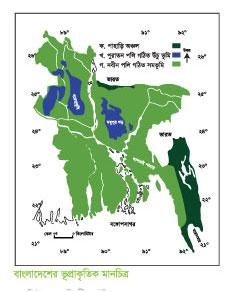
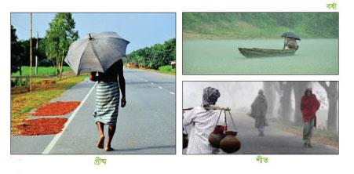
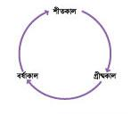
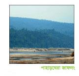

অধ্যায় ১১
বাংলাদেশের ভূপ্রকৃতি
১ ভূপ্রকৃতি
ভূপ্রকৃতি হচ্ছে কোনো দেশের ভূমির গঠন ও অবস্থা, বিশেষ করে সে দেশের বিভিন্ন অঞ্চলের ভূমির উচ্চতার তারতম্য।

পাহাড়ি অঞ্চল
আমাদের দেশের বেশিরভাগ স্থান সমতল ভূমি দ্বারা গঠিত। তবে দেশের দক্ষিণ-পূর্ব ও উত্তর-পূর্ব দিকে কিছু পাহাড় আছে। দক্ষিণ-পূর্ব দিকের পাহাড়গুলো রাঙামাটি, খাগড়াছড়ি, বান্দরবান ও চট্টগাম জেলায় অবস্থিত। বাংলাদেশের সবচেয়ে উঁচু পাহাড়ের নাম তাজিনডং, যার উচ্চতা প্রায় ১,২৩১ মিটার। দ্বিতীয় উঁচু পাহাড়ের নাম কেওক্রাডং, যার উচ্চতা ১২৩০ মিটার। এ দুটি পাহাড় বান্দরবান জেলায় অবস্থিত। এই পাহাড়ি এলাকায় বনভূমি আছে। এই বনভূমি বাংলাদেশের সৌন্দর্য বৃদ্ধি করেছে।
উঁচু ভূমি
পাহাড়ি এলাকা থেকে নিচু এসব উঁচু ভূমি পুরাতন পলি দিয়ে গঠিত। নদীর স্রোতে বয়ে আসা পলিমাটি জমা হয়ে এসব ভূমি তৈরি হয়েছে। মানচিত্রে এই উঁচু ভূমিকে নীল রং দিয়ে চিহ্নিত করা হয়েছে।
সমভূমি
সমভূমি নতুন পলি দিয়ে গঠিত এবং উত্তর থেকে দক্ষিণে কিছুটা ঢালু। এই সমভূমির উপর দিয়ে বয়ে গেছে অনেক নদী এবং এই ভূমিতে প্রায়ই বন্যা হয়। তাই নতুন পলি গঠিত সমভূমির মাটি খুব উর্বর।
৫৩ক। এসো বলি
বাংলাদেশের ভূপ্রকৃতি সম্পর্কে তুমি যা জান তা শিক্ষকের সহায়তায় শ্রেণিতে আলোচনা কর।
-
কেউ কি পাহাড়ে, সমভূমিতে বা বনে ঘুরতে গিয়েছ?
-
কোন ধরনের এলাকা থেকে নদীর উৎপত্তি হয়?
-
বেশিরভাগ নদীর গতিপথ কোনদিকে?
খ। এসো লিখি
বাংলাদেশের বিভাগীয় মানচিত্রের সাথে ভূপ্রাকৃতিক মানচিত্র তুলনা কর। কোন কোন বিভাগে উঁচু ভূমি অবস্থিত।
| উঁচু ভূমি |
বিভাগ |
|
বরেন্দ্রভূমি |
- |
|
মধুপুর গড় |
- |
|
লালমাই পাহাড় |
- |
গ। আরও কিছু করি
বাংলাদেশের মানচিত্র অংকন করে বিভাগগুলো চিহ্নিত কর। এবার পাহাড়ি অঞ্চলগুলো রং করে মানচিত্রে চিহ্নিত কর।
ঘ। যাচাই করি
এক কথায় উত্তর দাও:
পশ্চিমে কোন উঁচু ভূমি আছে? ----------------------------------
বাংলাদেশের দক্ষিণ-পূর্ব সীমানায় কোন দেশ অবস্থিত? -------------------
বাংলাদেশের দক্ষিণে কোন উপসাগর অবস্থিত? ------------------------
৫৪২ জলবায়ু
বাংলাদেশের ষড় ঋতুর দেশ। ঋতুগুলো হলো গ্রীষ্ম, বর্ষা, শরৎ, হেমন্ত, শীত ও বসন্ত। কিন্তু তাপমাত্রা ও বৃষ্টিপাতের উপর ভিত্তি করে বাংলাদেশের জলবায়ুকে প্রধান তিনটি ভাগে ভাগ করা যায়।
গ্রীষ্মকাল
মার্চ থেকে মে মাস পর্যন্ত গ্রীষ্মকাল। এসময় তাপমাত্রা ৩৫ ডিগ্রি সেলসিয়াস পর্যন্ত হয়। কোনো কোনো দিন তাপমাত্রা এর চেয়েও বেশি হয়। বছরের সবচেয়ে উষ্ণ মাস এপ্রিল। এপ্রিল বা মে মাসে ‘কালবৈশাখী’ ঝড় হয়।
বর্ষাকাল
জুন থেকে অক্টোবর মাস পর্যন্ত বর্ষাকাল। এসময় মৌসুমি বায়ু বঙ্গোপসাগর থেকে উত্তর দিকে বাংলদেশের উপর দিয়ে বয়ে যায়। ফলে প্রচুর বৃষ্টিপাত হয়। এই ঋতুতে দেশে গড়ে ২০৩ সেন্টিমিটার বৃষ্টিপাত হয়।
শীতকাল
বর্ষাকালের পরে বাংলাদেশের তাপমাত্রা কমতে থাকে এবং নভেম্বর থেকে ফেব্রুয়ারি মাস পর্যন্ত শীতকাল স্থায়ী হয়। দেশের উত্তর অঞ্চলে বেশি শীত পড়ে এবং এসময় গড়ে তাপমাত্রা থাকে ১৮ ডিগ্রি সেলসিয়াস। তবে বাংলাদেশের তুষার পড়ার মতো ঠান্ডা পড়ে না।

ক। এসো বলি
শিক্ষকের সহায়তায় তিনটি প্রধান ঋতু সম্পর্কে শ্রেণিতে সবার সাথে আলোচনা কর।
-
কোন ঋতুটি তোমার সবচেয়ে পছন্দের?
-
কোন ঋতুটি কৃষিকাজের জন্য উপযোগী?
-
দেশের উত্তর অঞ্চলের শীতকাল বর্ণনা কর।
-
বাংলাদেশের বৃষ্টির উপর বঙ্গোপসাগরের প্রভাব বর্ণনা কর।
খ। এসো লিখি
তিনটি ঋতুর যেসব সংখ্যাগত তথ্য ও বৈশিষ্ট্য রয়েছে তা লেখ। কাজটি জোড়ায় কর।
| গ্রী ষ্মকাল |
বর্ষাকাল |
শীতকাল |
|
- |
- |
- |
গ। আরও কিছু করি
বৃত্তাকারে তিনটি ঋতুকে একটি পোস্টারে আকঁ। ঋতুগুলোর অন্তর্ভূক্ত মাস লেখ এবং ওই ঋতুর বিভিন্ন ছবি আকঁ।

ঘ। যাচাই করি
ঋতুর সাথে তাদের বৈশিষ্ট্যগুলো মিল কর ।
|
গ্রীষ্মকাল |
মৌসুমি বায়ু |
|
বর্ষাকাল |
কালবৈশাখী |
|
শীতকাল |
গরম |
|
ঠাণ্ডা |
৩ বঙ্গোপসাগর
বঙ্গোপসাগার বাংলদেশের দক্ষিণে অবস্থিত। এই পাঠে আমরা বঙ্গোপসাগরের আশেপাশে তিনটি আকর্ষণীয় স্থান সম্পর্কে জানব।
সুন্দরবন
বাংলাদেশের দক্ষিণ-পশ্চিমে বঙ্গোপসাগরের তীরে অবস্থিত সুন্দরবন। এ বনের নাম সুন্দরি গাছের নাম অনুসারে হয়েছে। এই বন দেশের উপকূলীয় অঞ্চলকে ঝড় ও জলোচ্ছ্বাস থেকে রক্ষা করে। এটি পৃথিবীর বিখ্যাত ম্যানগ্রোভ বন। ইউনেস্কো ১৯৯৭ সালে সুন্দরবনকে বিশ্বের একটি অন্যতম ঐতিহ্য বলে স্বীকৃতি দিয়েছে। এ বনে বাস করে পৃথিবী বিখ্যাত রয়েল বেঙ্গল টাইগার। এছাড়া আছে চিত্রা হরিণ, বন্যশূকর, সজারু আর পাখি। বনের মাঝ দিয়ে বয়ে গেছে অসংখ্য খাল ও ছোট ছোট নদী যেখানে বাস করে কুমির, সাপ ও মাছ। এই খাল আর ছোট নদী সুন্দরবনের মাটিকে করেছে উর্বর।
কক্সবাজার
কক্সবাজার সমুদ্রসৈকত পৃথিবীর দীর্ঘতম বালুকাময় সমুদ্রসৈকত। এটি চট্টগ্রাম বিভাগের কক্সবাজার জেলায় অবস্থিত । এই সৈকত বঙ্গোপসাগরের উপকূল বরাবর ১২০ কিলোমিটার পর্যন্ত বিস্তৃত। সাঁতার কাটা আর ঘুরে বেড়ানোর জন্য পর্যটকদের কাছে কক্সবাজার সুমদ্রসৈতক অত্যন্ত প্রিয়। কক্সবাজার সমুদ্রসৈকতের পেছনে আছে সবুজে ঘেরা পাহাড়। কক্সবাজারের দক্ষিণে আছে সেন্টমার্টিন দ্বীপ যা বাংলাদেশের একমাত্র প্রবাল দ্বীপ। হিমছড়ি কক্সবাজার সমুদ্রসৈকত থেকে ১৮ কিলোমিটার দক্ষিণে অবস্থিত। এটি জলপ্রপাতের জন্য বিখ্যাত। ইনানী বিচ্ কক্সবাজার সমুদ্রসৈকত থেকে ৩৫ কিলোমিটার দক্ষিণে অবস্থিত। পরিবার ও আপনজনদের নিয়ে অবসরে ভ্রমণ ও সময় কাটানোর জন্য একটি সুন্দর জায়গা হলো কক্সবাজার সমুদ্রসৈকত।
কুয়াকাটা
বাংলাদেশের দক্ষিণে পটুয়াখালী হতে বঙ্গোপসাগরের তীর ঘেঁষে কুয়াকাটা সমুদ্রসৈকত অবস্থিত। ঢাকা থেকে কুয়াকাটার দুরত্ব প্রায় ৩৮০ কিলোমিটা। কুয়াকাটা শব্দের অর্থ হলো কুয়া খনন করা। প্রায় ২০০ বছর আগে রাখাইনরা পানির জন্য এখানে কুয়া খনন করেছিলেন। এখানে ১০০ বছরের পুরানো বৌদ্ধ মন্দির আছে। শীতে এখানে অনেক অতিথি পাখি আসে। এটি বাংলাদেশের একমাত্র সমুদ্রসৈকত যেখানে সাগরের মধ্যে সূর্যোদয় ও সূর্যাস্ত দেখা যায়। অপূর্ব প্রাকৃতিক সৌন্দর্যের কারণে কুয়াকাটাকে বলা হয় সাগরকন্যা। কুয়াকাটা হিন্দু ও বৌদ্ধ ধর্মাবলম্বীদের তীর্থস্থান।
৫৭ক। এসো বলি
কেন পর্যটকরা বঙ্গোপসাগরের আশেপাশে এসকল স্থানে বেড়াতে আসবেন তা শ্রেণিতে শিক্ষকের সহায়তায় আলোচনা কর।
আমরা কীভাবে আকর্ষণীয় স্থানগুলোর পরিবেশ সংরক্ষন করতে পারি?
খ এসো লিখি
প্রতিটি দর্শনীয় স্থানের আকর্ষণগুলো তালিকায় লেখ। কাজটি জোড়ায় কর।
|
সুন্দরবন |
কক্সবাজার |
কুয়াকাটা |
গ। আরও কিছু করি
সুন্দরবন/ কক্সবাজার/ কুয়াকাটা এই তিন স্থানের মধ্যে যেকোনো একটি আকর্ষণীয় স্থানকে বেছে নাও। কেন স্থানটি আকর্ষণীয়? পর্যটকদের উৎসাহিত করতে একটি পোস্টার তৈরি কর।
ঘ। যাচাই করি
বিভিন্ন দর্শনীয় স্থানের সাথে তাদের আকর্ষণীয় দিকগুলোর মিল কর।
|
সুন্দরবন |
দীর্ঘতম সমুদ্রসৈকত |
|
অতিথি পাখি | |
|
কক্সবাজার |
রয়েল বেঙ্গল টাইগার |
|
জলপ্রপাত | |
|
কুয়াকাটা |
বৌদ্ধমন্দির |
|
ম্যানগ্রোভ বন |
৪ দর্শনীয় পাহাড়ি এলাকা
এই পাঠে আমরা বাংলদেশের তিনটি আকর্ষণীয় পাহাড়ি এলাকা সম্পর্কে জানব।
বান্দরবান
বান্দরবান বাংলাদেশের দক্ষিণ-পূর্ব দিকে অবস্থিত একটি পাহাড়ি জেলা। এখানেই আছে বাংলাদেশের সর্বোচ্চ পাহাড়ের চূড়া তাজিনডং। এখানে আরও আছে দর্শনীয় চিম্বুক পাহাড়ের চূড়া ও বগা লেক। মিলানছড়িতে আছে শৈলপ্রপাত নামে এক পাহাড়ি ঝর্ণা। এছাড়া সারা শহর জুড়ে আছে অসংখ্য বৌদ্ধ মন্দির। স্থানীয় ভাষায় এই মন্দিরগুলোকে বলে কিয়াং।
রাঙামাটি
রাঙামাটি বাংলাদেশের আরও একটি পাহাড়ি জেলা। এর পাশ দিয়ে বয়ে গেছে কাপ্তাই হ্রদ। রাঙামাটি সবুজ পাহাড়, বন আর লেকে ঘেরা সুন্দর জায়গা। এটি একটি জনপ্রিয় অবকাশ কেন্দ্র। চাকমা, মারমা ও অন্যন্যা ক্ষুদ্র নৃ-গোষ্ঠীর বাসস্থান রাঙামাটি। তাই এখানে তাদের হাতে বানানো পোশাক ও হাতির দাঁতের গহন পাওয়া যায়। এছাড়া এখানে ক্ষুদ্র নৃ-গোষ্ঠীদের জাদুঘর আছে। আরও আছে ঝুলন্ত সেতু।
জাফলং
সিলেট বিভাগের উত্তরে হিমালয় পাহাড়ের পাদদেশে জাফলং অবস্থিত। এখানে খাসি ক্ষুদ্র নৃ-গোষ্ঠীর আবাসস্থল। এখানে মারী নদী থেকে বয়ে আসে অনেক পাহাড়ি পাথর। এই পাহাড়ি পাথর স্থানীয় লোকজন সংগ্রহ ও বিক্রি করে জীবিকা নির্বাহ করেন। জাফলং পাহাড়েঘেরা এক সবুজ বন যা প্রাকৃতিক সৌন্দর্যের লীলাভূমি।

ক। এসো বলি
কেন পর্যটকরা বাংলাদেশের পাহাড়ি এলাকায় বেড়াতে আসবেন তা শিক্ষকের সহায়তায় শ্রেণিতে আলোচনা কর।
-
তুমি বেড়ানোর জন্য পাহাড় নাকি সমুদ্র সৈকত বেছে নেবে?
-
এসব স্থানের পরিবেশকে কীভাবে সংরক্ষণ করা যায়?
খ। এসো লিখি
প্রতিটি দর্শনীয় স্থানের আকর্ষণগুলো তালিকায় লেখ। কাজটি জোড়ায় কর।
|
বান্দরবান |
রাঙামাটি |
জাফলং |
|
- |
- |
- |
গ। আরও কিছু করি
তোমার পছন্দ অনুযায়ী একটি দর্শনীয় স্থান বেছে নাও এবং কেন তুমি সেখানে যেতে চাও তা লেখ। মনে কর শ্রেণিতে যার লেখা সবচেয়ে সুন্দর হবে সে দর্শনীয় স্থানটি ভ্রমণের সুযোগ পাবে।
ঘ। যাচাই করি
বিভিন্ন দর্শনীয় স্থানের সাথে তাদের আকর্ষণীয়গুলোর মিল কর।
|
বান্দরবান |
ঝুলন্তসেতু |
|
- |
বৌদ্ধমন্দির |
|
রাঙামাটি |
চাকমা |
|
জাফলং |
খাসিয়া |
|
- |
জাদুঘর |